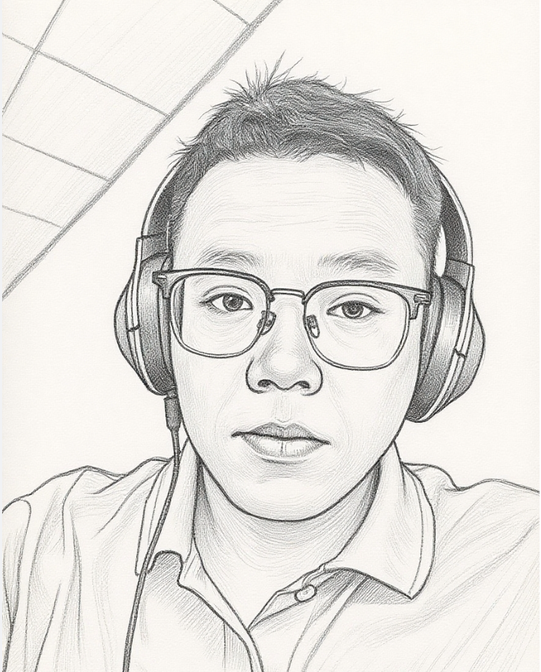

Lecturer | Anhui University of Science and Technology | School of Public Safety and Emergency Management
Research Areas: Deep Learning · Low-Level Vision · Image Restoration
现任安徽理工大学公共安全与应急管理学院校聘副教授，2024年12月毕业于合肥工业大学计算机与信息学院，获工学博士学位（导师：赵仲秋教授）。2023年10月至2024年10月作为国家公派联合培养博士生在新加坡南洋理工大学电气与电子工程学院从事合作研究（导师：Jiang Xudong教授）。入选2024年度中国科协青年人才托举工程博士生专项计划（托举学会：中国计算机学会），荣获2024年博士研究生国家奖学金和2021年硕士研究生国家奖学金。主要从事人工智能、计算机视觉研究，重点关注自然成像和遥感成像下的底层视觉任务，包括图像去雾、图像超分辨率重建和图像去噪✨✨✨等。近年来在IEEE TIP、IEEE TGRS、PR、CVPR、AAAI、ACM MM、ECAI、ICME等国际期刊和会议上发表10余篇学术论文，其中以第一作者身份发表6篇论文（含CCF-A类论文3篇）。主持国家自然科学基金青年（C类）、校级高层次人才等项目。
I am currently a Lecturer at Anhui University of Science and Technology (AUST). Previously, I obtained my Ph.D. degree 🎉🎉🎉 from the School of Computer Science and Information Engineering, Hefei University of Technology (HFUT) in December 2024, supervised by Professor Zhong-Qiu Zhao👍. From October 2023 to October 2024, I was funded by the China Scholarship Council (CSC) and spent a one-year exchange study at Nanyang Technological University, Singapore, supervised by Prof. Xudong Jiang (IEEE Fellow) 🤞. During this time, I am also lucky to have opportunities to collaborate with Henghui Ding (Professor at FDU) 🤞 and Yulun Zhang (Professor at SJTU) 🤞 . My research focuses on Artificial Intelligence and Computer Vision, with a focus on low-level vision tasks, including image super-resolution, image dehazing, and image denoising ✨✨✨. In recent years, I have published over 10 academic papers in international conferences and journals, including IEEE TIP, IEEE TGRS, PR, CVPR, AAAI, ACM MM, and ECAI, six of which he was the first author of (including three CCF-A papers).
If you'd like to work together 🤝 or get in contact with me, please feel free to email haoshenhs@gmail.com.